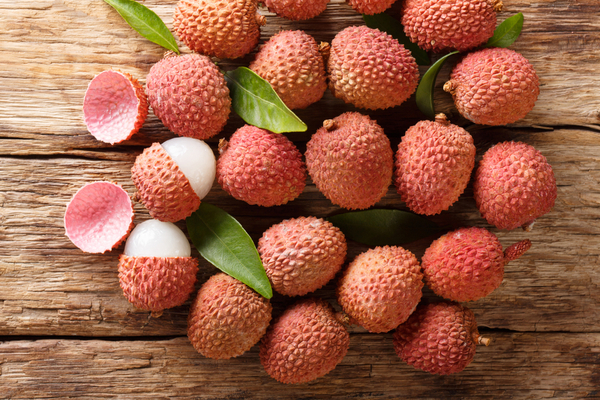

About Lichi
It is a tropical tree native to the Guangdong, Fujian, and Yunnan provinces of Southeast and
Southwest China, where cultivation is documented from the 11th century.[3] China is the main
producer of lychees, followed by India, other countries in Southeast Asia, the Indian
Subcontinent, Madagascar and South Africa. A tall evergreen tree, the lychee bears small fleshy
fruits. The outside of the fruit is pink-red, roughly textured, and inedible, covering sweet
flesh eaten in many different dessert dishes.
Lychee seeds contain methylene cyclopropyl glycine which can cause hypoglycemia associated with
outbreaks of encephalopathy in undernourished Indian and Vietnamese children who had consumed
lychee fruit
Condition to Lichi :-
-
Type of soil require
Lychee cultivation is highly successful in areas having minimum temperature of 10°C from
December to February and 38°C from April to June. However, temperature of 32° C during these
months is considered to be optimum. It is highly specific to climatic requirement for its
establishment, plant growth and fruiting, and consequently spread of area. A moist
atmosphere, occasional rainfall, cool dry winter free from frost and hot winds are ideal for
its cultivation. In lychee growing areas in India the temperature varies from 21° C to
37.8°C during flowering and fruiting. It has been observed that flower initiation in lychee
requires comparatively low temperature. Seasonal variation in temperature is favourable for
proper fruiting. A dry climate, free from rains for about 2 months before flowering induces
flower bud differentiation, blossom and consequently give high production. In Chotanagpur,
the fog free dry winter, mild sub-tropical summer and intermittent pre-monsoon showers
during April-May have been observed to be highly favourable for blossoming, better aril
development and improvement in fruit quality. The sub-tropical to mild temperate climate in
the foothills and valleys of the Himalayas are also suitable for lychee cultivation.
Depending upon the temperature rise after winter the time of flowering and maturity is
determined. No fruiting has been recorded when lychee has been grown in tropical conditions.
However, on hills in sout0hern states flowering is observed and harvesting commences in
November-December.
-
Climate
Lichi Being a warm season crop, the plant requires ample sunshine and dry weather for production
of fruits. In case they are grown in places where winter is prevalent, then they must be
provided with adequate protection from cold and frost. They are extremely sensitive to the
slightest of frost and hence care must be taken to keep the frost away from the crop.
24-27⁰C is ideal for the seed germination and growth of watermelon plants. A cool night
would ensure ample development of sugars in the fruit.
Overbearing Varieties– They develop flower buds during long as well as short light periods.
Commercial Varieties– They flower only during the short light periods.
-
Irrigation
Irrigation at the intervals of 2-3 days during the initial stage of plant establishment is
considered essential. Further, the young plants should be irrigated during dry periods and
winter months at intervals of 3-5 days. For young plants mulching with dry leaves or
residues in the basin help in better moisture conservation. Experiments conducted at Ranchi
indicated that irrigation of plants at alternate day intervals, 6 weeks before harvesting
improves fruit retention, encourages better fruit development, and minimizes the cracking,
apart from the quality of fruits. Certain physiological disorders like poor sex ratio, poor
fruit set, heavy fruit drop and high fruit cracking, besides sunburn of the fruits can be
minimized with proper water management. The basin or flood method of irrigation is normally
practiced. However, adoption of drip irrigation has been found to be effective in the
economic use of water and enhanced growth, especially in an area where water availability is
not satisfactory.
Moisture conservation through mulching using dried weeds or black polythene sheet has been
found useful. Trials have also been conducted to conserve moisture using farm residues and
polythene sheets. Through adoption of mulching, frequency of irrigation is reduced. In a
trial conducted at Ranchi mulching with 3 irrigations was effective in reducing cracking and
enhancing yield and quality of fruits (Singh, 1986). To check fruit cracking mulching with
3-4 irrigations during fruit growth has been found to be satisfactory.
-
Manuring & Fertilization
Field experiments conducted on different cultivars at different locations have clearly
demonstrated the effect of a graded dose of NPK on growth, yield and quantity of fruits.
Application of 600-800 g N, 200-300 g P2O5 and 400-600 g K2O per plant is recommended for
12-15 year old trees. Nitrogen and Potassium should be applied in 2-3 splits and P2O5 in two
splits. Excessive application of nitrogenous fertilizer before flowering should be avoided.
Phosphorus application at the time of flower bud differentiation improves flowering and
fruiting. Application of cakes and manure is generally practiced to get better quality
fruits. In general, lychee orchards maintained with higher doses of organic manure have
better yield and quality as compared to orchards maintained with chemical fertilizers.